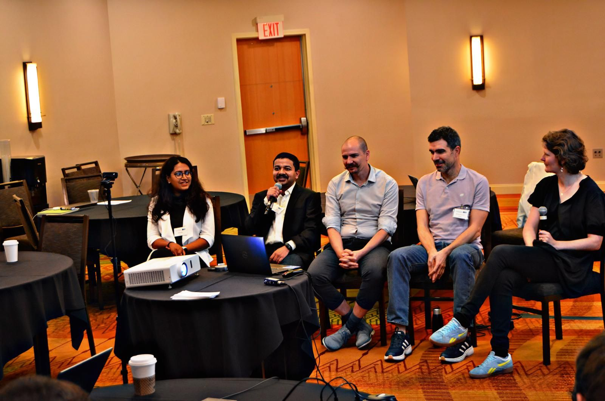
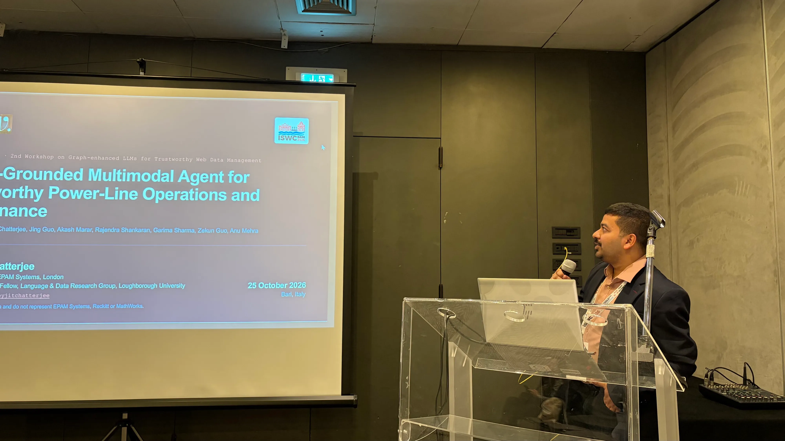

Drive, purpose and humility
Recognised for an unusually strong combination of drive, clarity of purpose, intelligence and humility by a leader with more than 20 years of corporate experience.
VP, IT&D Digital - Supply Chain, Reckitt
Enterprise AI · Strategy · Products · Leadership
Dr. Joyjit Chatterjee
I lead AI solution development for global enterprises, bringing together business strategy, product thinking and research depth. My work spans R&D, manufacturing and procurement, with senior stakeholder engagement across Europe and North America.
Lead Data Scientist, EPAM Systems
Distinguished Visiting Fellow, Loughborough University
 View photograph ↗
View photograph ↗Forbes 30 Under 30 Europe
At the Forbes Under 30 Summit, Phoenix, 2026.
Explore recognition & contributions →Enterprise AI
Strategy & delivery · EPAM
Multi-million £AI engagements across Europe and North America
AI/ML consulting across R&D, manufacturing, procurement and supply for Fortune 500 and FTSE 250 organisations.
Explore contribution & evidence →GenAI / Procurement
2%of annual procurement spend: evaluated business case
Game theory and conversational role-play simulations applied to enterprise procurement negotiations.
Explore contribution & evidence →AI product development · Reckitt × Hull
OutstandingThe highest Innovate UK KTP grade
Turning AI research into a production application for healthcare product development, with cross-functional delivery and business adoption.
Explore contribution & evidence →Operations & adoption · Reckitt
~30%Waste-reduction contribution in major UK factories
Predictive and causal analytics for process verification, quality and operational planning.
Explore contribution & evidence →
View speaking photograph ↗International speaker & panellist
From executive roundtables to international research forums, connecting trustworthy AI with the decisions leaders make.
IEA Wind · Barclays & Cyber London · Queen Mary University of London · CXO Group
Latest panel · November 2026Agentic AI, connected labs and tactical procurement at Barclays Innovation Hub, London.
Talks, interviews & event photographs →Stakeholder perspectives
Anonymised summaries of individual feedback.
Drive, purpose and humility
Recognised for an unusually strong combination of drive, clarity of purpose, intelligence and humility by a leader with more than 20 years of corporate experience.
VP, IT&D Digital - Supply Chain, Reckitt
Credibility with senior stakeholders
Recognised for strong support across strategic pursuits, confidence in senior business discussions and credibility as a client-facing subject-matter expert.
VP, Business Development, EPAM

Recognition & contribution
Forbes 30 Under 30 Europe. Green Talents. Outstanding KTP. Invited academic service at ETH Zurich and contributions to the wider AI community.
Awards, distinctions & credentials →
Research with reach
Independent references across UCL, Norwegian doctoral guidance, Singapore and beyond. Explore the studies, open papers and Wiley book.
Research impact, publications & PDFs →